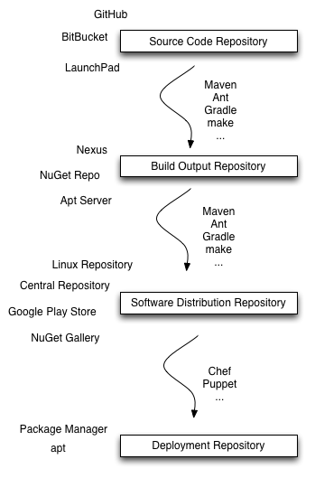

RPM Builds |
RPM Package Manager (RPM) was created to deliver software to workstations and servers. Besides being an efficient software delivery mechanism, RPM also provides security features that assist system administrators with managing their software and trusting the code that is going into their infrastructure.
RPM is a package management system that bundles software source code or binaries together for easy installation on a computer. These files are tracked and allow for easy installation, upgrading, and removal. Since the RPMs have been built specifically for the operating system and platform they are installed on, the software is expected to operate in a predictable and consistent manner.

RPMs not only make it easy for the user to install software on their computer but also for the developer to deliver the software. RPMs makes it easy to pull in dependencies, other bits of code needed by the software to function properly, and to provide updates to the software in question. The ability to apply patches for security fixes makes RPMs an especially good tool for maintaining secure computer environments as code fixes can easily be verified by system administrators prior to installation.
Package repositories can also be made to allow users access to a central database of software that is easily installed. The user can determine where the software originated and once installed is prompted to perform any upgrades when updates are available in the repository. The user can remove the software at any time and the RPM installer will automatically clean up the installation, preventing old versions of the software from persisting on the system, which could get used by mistake or expose the user to flaws or exploits. Removing unused software reduces potential attack vectors and because RPMs makes it easy to remove unused software, users are much more likely to do so.
Dependencies in RPM packages allow the inclusion of libraries in the software without including those libraries in the package itself. This has several benefits to both the maintainer of the package and the user of the software. First it makes the code base smaller, with fewer lines of code to maintain the overall package will be smaller and easier to manage. Next, there will be fewer duplications of the same software on a system.
Historically, many pieces of software would use the same library, resulting in duplicates installed on a system. Finally, there is a much lower possibility of using a library with security vulnerabilities as the library would only have to be updated once by the library writers and not in every code base that uses the library. With one update, all software using that library is instantly fixed the next time it’s run, usually without the need of rebooting the system, and without the need to modify code in all the packages using that library.
A good example of the dependency problem that RPMs help fix is the many software packages that use zlib. It is unnecessary to maintain multiple installations of zlib or having zlib embedded in the source code because every piece of software installed on the system can use the same installed zlib instance. This reduces the space needed to deploy the software, reduces the maintenance for the installed software, and makes the computer safer as there will not be any old, potentially insecure versions staying installed on the system.
Enterprise systems expect software to be stable and not undergo frequent upgrades. There are times, however, when adding certain functionality or a security fix is in the best interest of the customer. This is an instance where patching becomes an important feature.
Patching allows the software to have certain bugs fixed, features added, or security patches applied, without introducing the uncertainty that comes with upgrading to a completely new version of the software.
RPM packages can be signed using an OpenPGP key that authenticates the package’s contents as well as providing a trust link to the person or project that packaged the software. In this way you can verify that your RPM package has not been tampered with since being signed by Skysong or signed with your own keys. This is important for trusting the package as being authentic, unmodified, and coming from a trusted repository.
Current skysong package signing keys are at http://www.skysong.co.uk/yum/RPM-GPG-KEY-skysong
RPM software builds are produced according to the instructions in the RPM source package. This results in software builds that are reproducible. The system Red Hat uses to build software uses a new buildroot for each build, leading to high-quality builds that can be reproduced at a future date or by a customer.
RPM packages can have a number of versioning enhancements allowing major and minor releases as well as bugfixes to all have their own versions and to be independantly installable if required.
Skysong can provide the expertise of building and integrating RPM build systems and can help with setting up build servers, repository servers and signing processes